地政学
ジョージタウンはマラッカ海峡北部の航路に面し、ペナン港、フェリー、橋、空港で半島北部、タイ南部、インド洋商圏を結びます。首都ではありませんが海峡交易と植民地史が重く、港湾、観光、工業を同時に動かします。

🇲🇾 マレーシア / ペナン / World City Atlas
マラッカ海峡の交易、植民地期の街路、多民族の祈り、屋台食、世界遺産観光、電子産業、住宅の日常が近い距離で重なる、ペナン島の歴史港町。
都市の骨格
ジョージタウンは、ペナン島北東部の港と旧市街を核に、華人、マレー系、インド系、欧州植民地期の痕跡、丘陵住宅地、工業地区、観光の歩行圏を結んでいます。
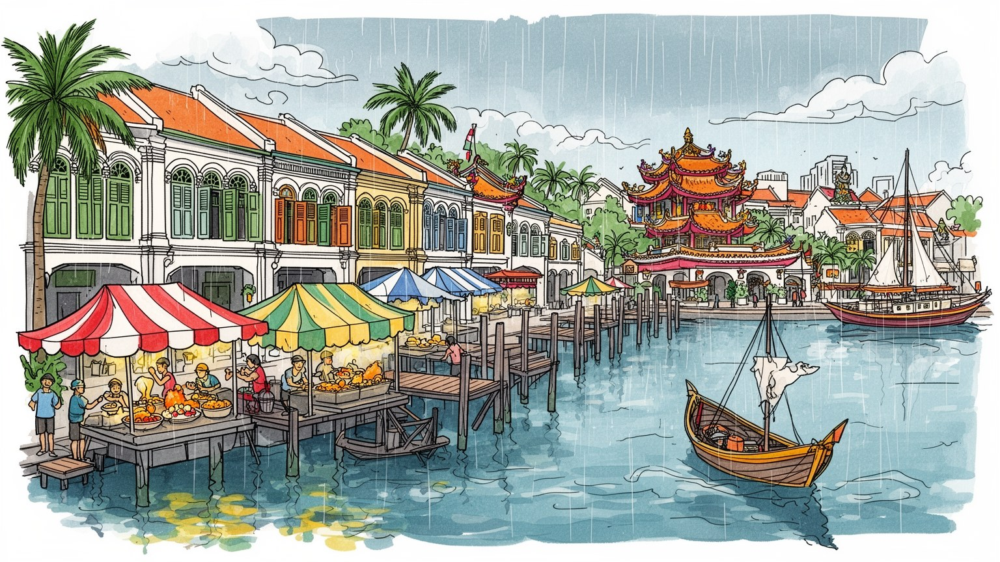
ジョージタウンはマラッカ海峡北部の航路に面し、ペナン港、フェリー、橋、空港で半島北部、タイ南部、インド洋商圏を結びます。首都ではありませんが海峡交易と植民地史が重く、港湾、観光、工業を同時に動かします。
旧港と観光だけでなく、バヤンルパスの電子産業、医療、教育、物流、ホテル、飲食が都市圏を支えます。技術職、工場労働、屋台経営、清掃、配達、港湾作業が近く並び、生活費上昇も住宅と通勤の深刻な焦点です。
ショップハウスの通りには、仏教寺院、道教廟、モスク、ヒンドゥー寺院、教会、氏族会館が近く並びます。華人、マレー系、インド系、プラナカンの食と祭礼、音楽が暦を作り、祈りと商いが日々長くも重なります。
旅行者は壁画、屋台、寺院、海辺、ホテルを歩きますが、住民には家賃、渋滞、観光混雑、古い建物の維持、暑さ、通学、通院が日常負担です。世界遺産の魅力は、暮らしを残せるかで質が決まります。夜も問われます。
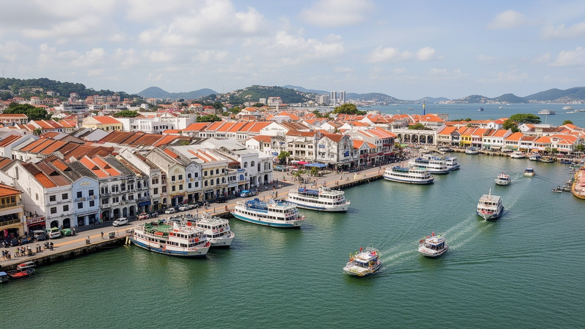
ジョージタウンは、マラッカ海峡北部を行き交う船と、マレー半島北部の内陸を結ぶ港町として成長しました。海峡は単なる眺めではなく、自由港の制度、錫とゴムの取引、移民の到着、香辛料や布の商い、現在の物流と観光をつないできた都市の背骨です。旧市街は対岸のバターワース、ペナン港、フェリー、二本の橋、空港、工業地区と一体で動き、北部マレーシア、タイ南部、インド洋方面への結節点として独自の重みを持ちます。海辺を歩くと、行政施設、倉庫、桟橋、水上集落、高層住宅が潮の匂いとエンジン音の中で重なります。港湾機能の一部は対岸や新しい埠頭へ移りましたが、船待ちの時間、フェリーの記憶、倉庫の再利用は都市の感覚に残ります。海峡に開いた便利さは人と商品を呼ぶ一方、燃料価格、地域政治、海面上昇、沿岸開発、渋滞の影響も早く受けます。ジョージタウンを港町として読むには、観光の旧市街だけでなく、船、橋、対岸、空港、工場、移民の移動を同じ地図に置く必要があります。夕方の海風、湿った舗装、クラクション、港湾労働の名残は、海に依存する豊かさと不安定さを同時に伝えます。週末の釣り、海辺の散歩、フェリーを待つ人の列も、港が日常の余暇と結びつくことを示します。海峡の眺めは観光写真である前に、通勤、買い物、仕事探し、家族の移動を支える生活の方向感覚です。
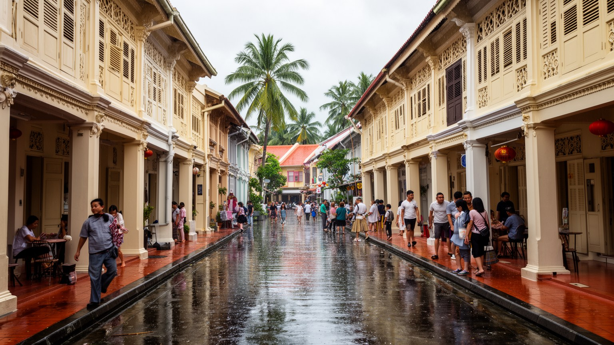
ジョージタウンの旧市街は、マラッカとともに海峡植民都市の世界遺産として知られますが、価値は古い外観だけにありません。細長いショップハウス、五脚基の歩廊、中庭、木窓、タイル、寺院、会館、市場、倉庫が、商売と住居を一体にした街路の生活を伝えています。歩廊の影は熱帯の強い日差しとスコールを避ける場所で、朝の買い物、子どもの通学、高齢者の休憩、店先の値段交渉を支えてきました。保存制度は街並みを守りますが、家賃上昇、短期宿泊、カフェ化、駐車、歩道の占有により住民が中心部に残りにくくなることもあります。修復された建物に店主、職人、家族、祈り、日常の買い物が残らなければ、街は舞台装置へ近づきます。雨漏り、湿気、消防、配管、相続、改修費は所有者と借り手に重く、保存は過去を凍らせる作業ではなく、現在の暮らしが使える形に直す作業です。新聞、掲示、店の口コミ、地域のフェイスブックやチャットの情報網も、営業日や祭礼、交通規制を知らせます。世界遺産性は写真の美しさと、住み続ける費用、規則、騒音、観光圧を同時に見て初めて分かります。朝に店が開き、夜に住民が帰り、祭礼の日に道が使われることが、使われる遺産の核心です。古本屋、金物店、制服店、布地店のような普通の店が残るほど、街路は観光の背景ではなく生活の場になります。
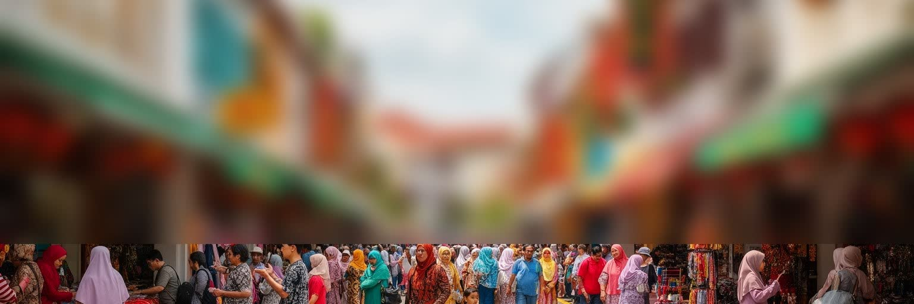
ジョージタウンの多民族性は、制度上の分類だけでなく、通りの匂い、言語、店先、学校、祭礼の音として現れます。華人の氏族会館や道教廟、マレー系の村落とモスク、インド系の商店とヒンドゥー寺院、プラナカンの住宅文化、欧州植民地期の教会や行政建築が、歩ける範囲に並びます。ペナン・ホッケン、マレー語、タミル語、英語、標準中国語は、注文、値段交渉、祈り、役所、学校の場面で使い分けられます。共存は美しい標語だけではなく、食の禁忌、祝祭の混雑、駐車、騒音、土地所有、教育、政治代表をめぐる調整でもあります。華人商業は街の経済を支え、マレー系住民の生活圏は海辺や郊外にも広がり、インド系コミュニティは寺院、衣料、金細工、食を通じて中心部に存在感を持ちます。子どもは家庭と学校で複数の言語や休日を学び、高齢者は会館、モスク、寺院、朝市を通じて近隣の情報を受け取ります。結婚式の料理、葬儀の道順、店の休み、ローカル紙やラジオの話題にも、集団ごとの記憶が残ります。多文化観光は魅力を伝えますが、異なる記憶を飾りとして消費する危うさもあります。強さは違いが完全に溶け合うことではなく、近い距離で折り合いながら商い、祈り、食べ続けてきた経験にあります。看板の文字、厨房の香り、祝日の飾りは、その折り合いを毎日見せます。市場の声にも表れます。
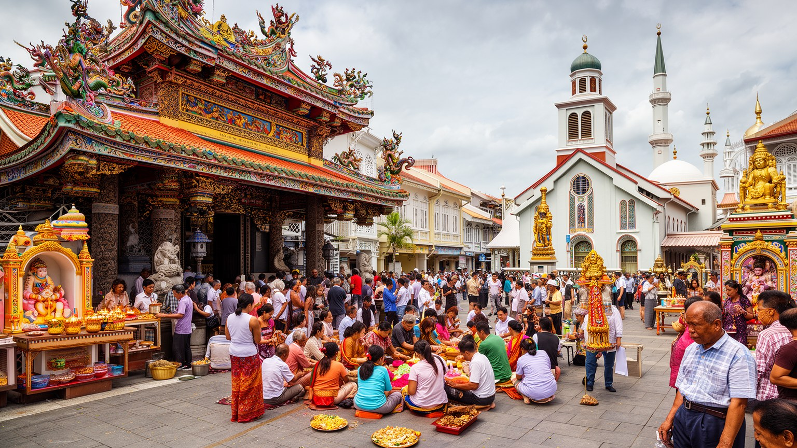
ジョージタウンでは、宗教施設が観光名所である前に、日常の時間を区切る場所です。観音寺、カピタン・クリン・モスク、スリ・マハ・マリアマン寺院、セント・ジョージ教会、道教廟、氏族会館は、短い歩行圏にありながら、それぞれ別の暦、香り、音、食の規則、儀礼を持ちます。春節、タイプーサム、ラマダンとハリラヤ、ディーパバリ、ウェーサーカ、クリスマス、氏族の祖先祭祀は、通りの交通、店の休み、夜の明かり、屋台の献立を変えます。線香、礼拝、鐘、祝祭の行列、断食明けの食事、葬送、結婚は、街路を一時的に別の空間へ変えます。宗教施設は寄付、清掃、供物、料理、音楽、若い世代の参加で維持され、子どもは祭礼の手伝いを通じて地域の作法を覚えます。観光客が増えると、撮影、服装、混雑、騒音への配慮が重要です。祈りの場が消費の背景になりすぎると、住民の尊厳が損なわれます。一方で宗教施設は移民の記憶、相互扶助、災害時の支援、文化教育の拠点でもあります。祭礼には商店、家族、音楽家、料理人、交通整理を担う人が関わり、信仰は街の労働と深く結びつきます。多宗教の近さは豊かさであると同時に、毎日の配慮を必要とする公共性です。互いの祝祭を知ることは、隣人として暮らすための実務でもあります。香、太鼓、祈りの声が重なる時間に、街の暦が立ち上がります。
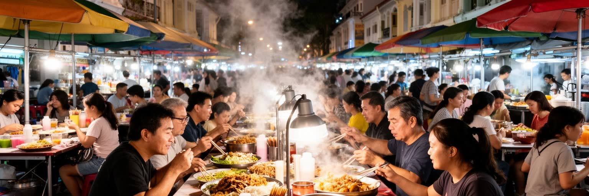
ペナンの屋台食は、ジョージタウンを世界に知らしめる入口です。チャークイティオ、アッサムラクサ、ホッケンミー、ナシカンダール、ロティ、チェンドル、ニョニャ菓子、コピティアムの朝食は、移民の歴史と多民族の味を一皿に載せます。ですが屋台は観光客の名物リストではなく、住民の朝食、昼食、夜食を支える生活インフラです。朝市では魚、香草、麺、香辛料、果物が動き、夕方にはガーニー、チュリア通り、ニューレーン周辺で鉄板の音、炭火の匂い、氷を削る音が強まります。市場、屋台、コピティアム、ミニマーケット、モールのフードコートは、所得や年齢に応じて使い分けられます。仕込み、火力、麺の供給、氷、食器洗い、家族経営、外国人労働、保健規制、価格の維持が日々の味を支えます。人気店に行列ができ、SNSで店名が広がると、収入は増えますが家賃、混雑、後継者不足、営業時間の負担も重くなります。安く食べられることは都市の包容力ですが、安さは長時間労働に依存しやすいです。料理名だけでなく、誰が調理し、どの宗教の食規則に配慮し、どの言語で注文し、どの住民が毎日通える価格なのかを見る必要があります。皿の上には、港町の歴史、露店経済、現在の生活費が一緒に現れます。味の継承はレシピだけでなく、屋台を続けられる場所と労働条件にかかっています。
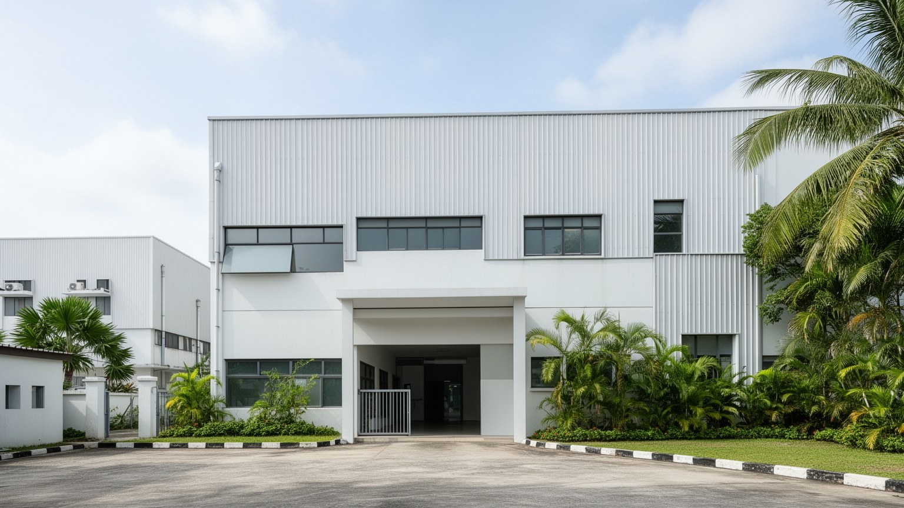
ジョージタウンの印象は旧市街と屋台に偏りやすいですが、ペナンの現代経済を支える大きな柱は島南部の電子産業です。バヤンルパスの工業地区には半導体、電子部品、医療機器、精密製造、検査、物流、研究開発の企業が集まり、空港と港湾の近さを生かして世界の供給網に接続しています。工場、大学、職業訓練校、技術者、管理職、現場労働者、通勤バス、寮、食堂は、旧市街とは違う都市の時間を刻みます。マレーシア科学大学や専門学校は人材育成と研究を担い、若者の進路は観光、医療、教育、電子産業の間で揺れます。電子産業は高付加価値の雇用を生み、ペナンを北部マレーシアの産業拠点に押し上げてきました。一方で、景気循環、半導体需要、賃金差、技能形成、外国人労働者の待遇、交通渋滞、住宅費上昇に左右されます。交代勤務は早朝や深夜の移動を生み、家族の生活時間、屋台の営業時間、学校送迎にも影響します。観光客が歩く世界遺産地区と技術者が働く工業地区は別世界に見えますが、同じ島の土地、水、道路、学校、人材を共有しています。港町の歴史は、いま電子部品の移動と技術労働で更新されています。旧市街の観光収入と工業地区の賃金が、住宅市場や若者の進路で交差する点にも、この都市圏の現代性があります。工場帰りの食堂やバス停も、産業都市としての表情です。
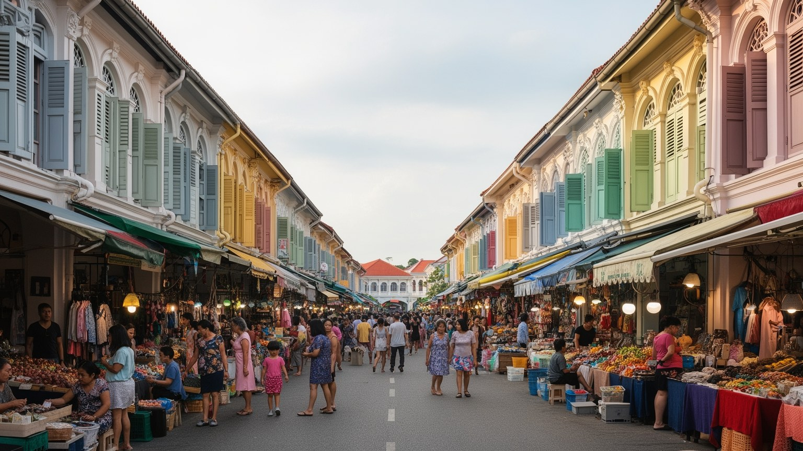
ジョージタウンの暮らしは、世界遺産地区のショップハウス、高層マンション、郊外住宅、漁村、丘陵地の住宅が混在する中で成り立ちます。旧市街では店舗の上や奥に住む生活が続いてきましたが、保存規制、家賃上昇、短期宿泊、カフェやホテルへの転用により、住民が中心部に残りにくくなっています。古い建物は風通しや陰影に優れる一方、湿気、老朽化、配管、耐火、駐車、バリアフリーの問題を抱えます。住民の日常には、学校、大学、病院、市場、寺院、モスク、屋台、バス、バイク、親族訪問、雨の日の移動があり、観光客の歩く時間とは違うリズムがあります。子どもは塾や学校行事、海辺の散歩、屋内モールを行き来し、高齢者は朝市、診療所、会館、祈りの場、日陰の歩廊を生活圏にします。サッカー、バドミントン、ジョギング、海辺の自転車は、狭い島で体を動かす身近な余白です。住宅の問題は個人の住まいだけでなく、店を継ぐ人、祭礼を支える人、屋台に通う常連、近所で高齢者を見守る関係を残せるかに関わります。魅力を守るには外観保存だけでなく、住める家賃、修繕支援、生活交通、静けさ、公共施設が必要です。観光都市の中心で眠り、洗濯し、子どもを学校へ送る日常こそ、世界遺産の厚みを支えています。洗濯物や夕食の匂いも、住む街である証拠です。日陰のベンチも大切です。
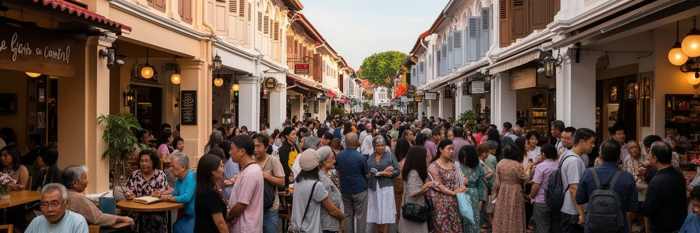
ジョージタウンは、壁画、ショップハウス、屋台、ブティックホテル、寺院、海辺の散歩によって多くの旅行者を集めます。観光は雇用を生み、古い建物の修復を促し、街の知名度を高める一方、中心部の生活に強い圧力をかけます。短期滞在者向けの宿泊施設が増えれば住宅は減り、人気店の行列は歩道をふさぎ、写真撮影のための移動は宗教施設や路地の静けさを乱すことがあります。壁画やカフェは入口として有効ですが、街を背景画像としてだけ消費すると、建築、信仰、労働、住民の記憶が見えにくくなります。観光の質は、訪問者数だけでなく、収入が地元の店や職人へ届くか、住民が中心部を使い続けられるか、ゴミや騒音が管理されるかで決まります。ホテル、ガイド、飲食、清掃、交通、土産物店、夜市の仕事は幅広い雇用を支えますが、低賃金で不安定な仕事も含みます。週末旅行者が集中する時間には細い街路の負担が増え、夜のバーやライブ音楽、路上演奏、フードコートのにぎわいは、住民の睡眠と観光の活気を同時に動かします。ジョージタウンの観光は、世界遺産の保存、日常生活、夜の文化を同時に扱う必要があります。訪れる側に求められるのは、短い滞在で多くを消費する速さではなく、祈りの場、住まい、食堂、古い店が今も使われていることへの想像力です。成功は、住民が中心部を避けずに暮らせるかで測られます。
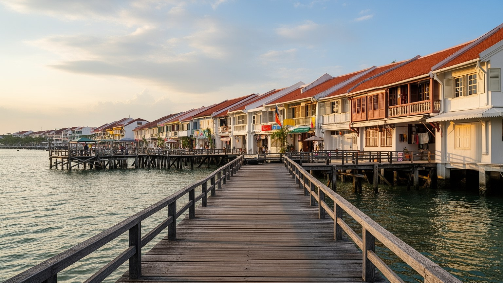
ジョージタウンの海辺には、氏族ごとの桟橋集落として知られるクランジェッティが残ります。木の通路、海上の家、寺、店、観光客の列は、港町の移民史と現在の生活が重なる場所です。かつて港湾労働や荷役に関わった華人コミュニティの暮らしは、いま観光地として注目される一方、住宅の安全、火災、汚水、相続、修繕、観光客の視線という課題を抱えます。海辺は開放的な景観であると同時に、高潮、海面上昇、埋立、港湾開発、沿岸道路、排水の影響を受ける脆い生活圏です。桟橋では家の前の植木、祠、洗濯物、土産物店、写真を撮る旅行者が同じ幅の通路を共有します。保存と居住の境界は繊細で、住民の私生活が観光資源になりやすい場所です。水上集落を理解するには、珍しい景観として眺めるだけでなく、港湾労働史、氏族の相互扶助、海と暮らすリスク、子どもや高齢者の日常を考える必要があります。雨や強い日差し、潮の匂い、板の軋み、船の音は、石造りの旧市街とは違う時間を作ります。対岸のバターワースを望む視線も、島だけで完結しない生活圏を示します。スコール後の水たまり、蒸し暑い夜風、満潮時の不安は、気候と水辺が生活に直接触れることを教えます。釣り糸、買い物袋、子どもの声が同じ通路に重なることも、水際の日常です。水際の暮らしを守ることは、港町の記憶を守ることでもあります。
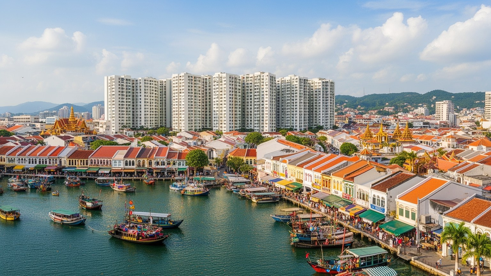
ジョージタウン（ペナン）は、世界遺産の旧市街だけで完結する都市ではありません。マラッカ海峡の港町としての位置、自由港の歴史、華人・マレー系・インド系・プラナカンの生活、宗教施設の近さ、屋台食、ショップハウス、クランジェッティ、電子産業、医療と教育、観光圧、住宅問題が一つの島に重なっています。旧市街の壁画や保存建築は入口として魅力的ですが、その背後には工場へ向かう通勤、屋台の仕込み、寺院の寄付、モスクの礼拝、学校の送迎、ローカル紙やチャットで流れる交通情報、古い建物の修繕、家賃に悩む住民がいます。音楽バー、路上演奏、映画館、ショッピングモール、サッカー観戦、バドミントンの練習も、歴史地区の外側を含む都市の楽しみです。観光、保存、産業、住宅を別々に扱うと全体像は見えません。橋、フェリー、バス、バイク、徒歩の使いやすさが、仕事、学校、病院、屋台、海辺への距離を決めます。ジョージタウンを読むことは、海峡を通じて世界へ開いた歴史と、島の限られた土地で毎日暮らす人の現実を同時に見ることです。建築の色、料理の香り、祈りの音、工場の勤務時間、住宅の家賃、潮、雨、夜の音が、東南アジアの歴史都市が抱える魅力と難しさを伝えます。小さな街路を丁寧に読むほど、世界と日常が同じ場所で折り重なることが分かります。